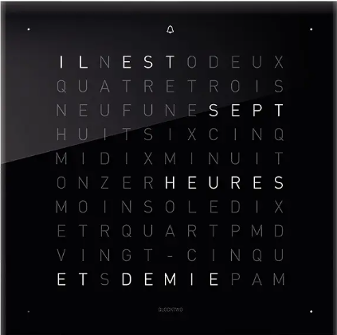
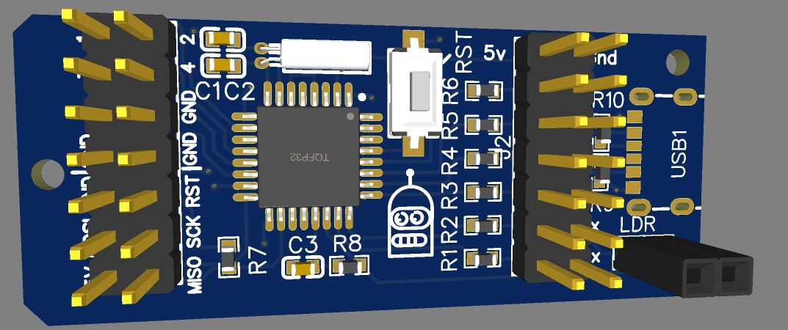
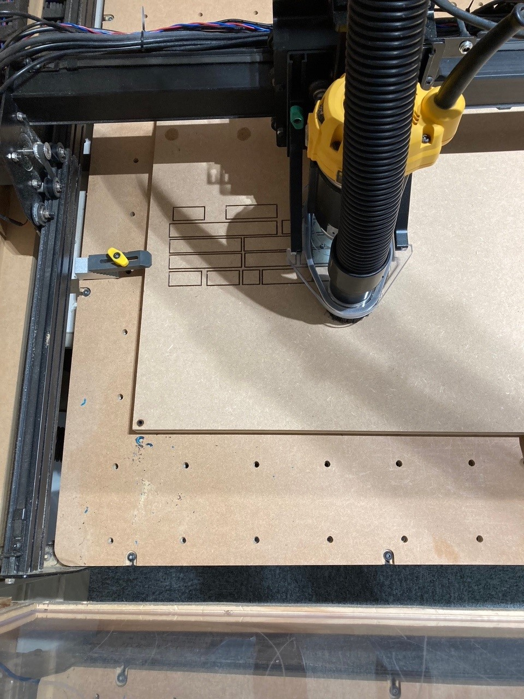

Dev & test days - Secteur 3
Sommaire
- Introduction
- Composants et design de la board
- Partie afficheur
- Développement
- Conclusion
Introduction
fleche bas pour la suite d'introduction a droite pour la suite des sous parties
C’est quoi le secteur 3 et la code room ?
Infos utiles, qui peut venir, quels jours… Quelques vieux projets
Le projet : l’horloge à mot
Présentation, fonctionnement, tarifs commerciaux Nos objectifs : faible coût, composants simples
Composants et design de la board
Préambule : tout ce qu’on a souhaité écarter
Les rubans de LEDs adressables Connexion Wi-Fi, mise à jour par NTP
La problématique de base : comment piloter XX leds ?
Quand XX = 1 : courant, voltage d’une LED, contraintes d’un microcontrôleur Les différents types de multiplexage, nombre de GPIO nécessaires, choix du µc: la pénurie, les stm32 et atmega8 (alimentation, )
Comment interagir avec l’objet ?
Nos idées d’interface utilisateur (PIR, boutons, mise sous tension à heure fixe…)
Le schéma de la board
explications de chaque élément
Réalisation du circuit
Partie afficheur
Principe retenu pour l’assemblage en multi-couches
- Planche de lettres remplie de résine
- Séparateur de mots rempli de résine
- Eclairage
Découpe laser vs découpe CNC, EASEL
Comment couler de la résine
Choix des LED
c1/4 c2/5 c3/6
| | | | | |
L1 --x-|---x-|--x-|--\
| x---|-x--|-x--/
| | | | | |
L2 --x-|---x-|--x-|--\
| x---|-x--|-x--/
| | | | | |
L3 --x-|---x-|--x-|--\
| x---|-x--|-x--/
Développement
L’environnement PlatformIO
Pour ceux qui ne connaissent pas et sont restés sur Arduino
Description du code, conception détaillée
omment on (essaie (péniblement) de) (on a brillament su) faire en Rust
Conclusion
Questions ?